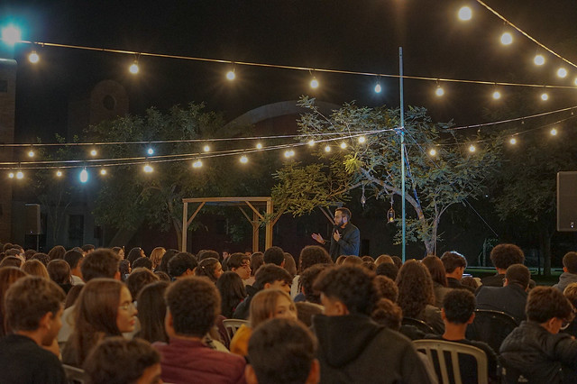
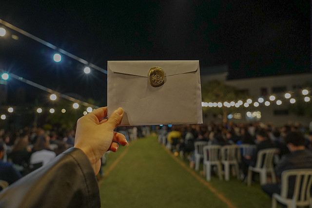
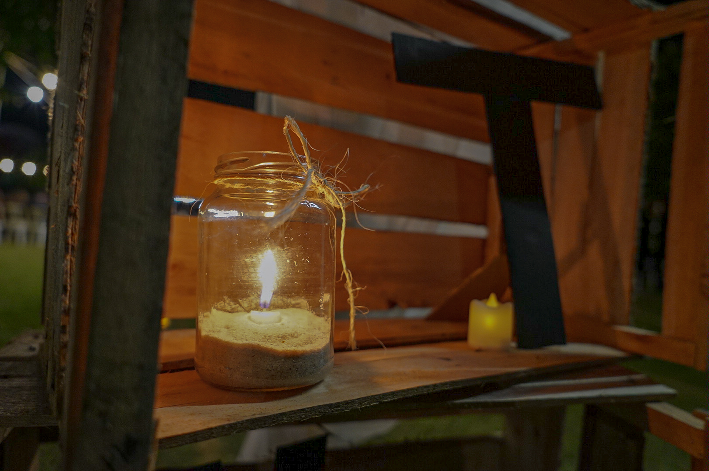
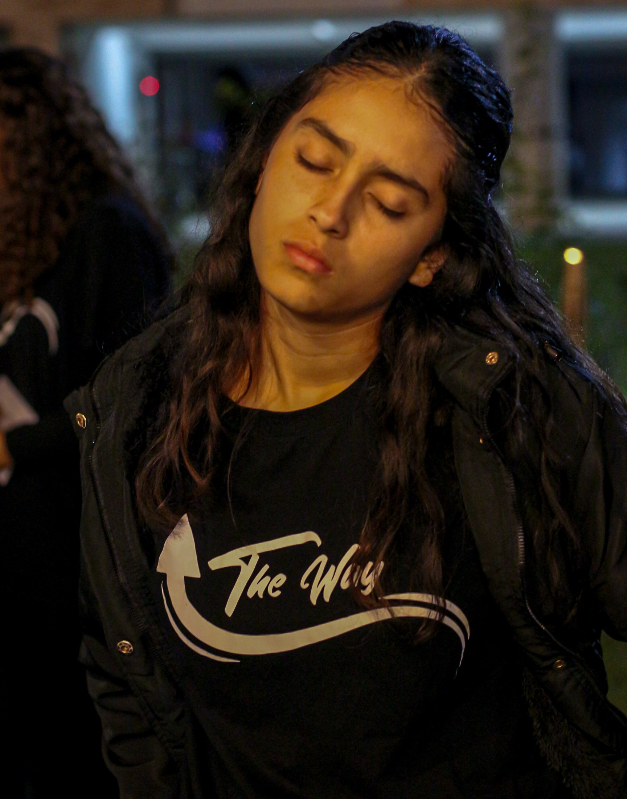
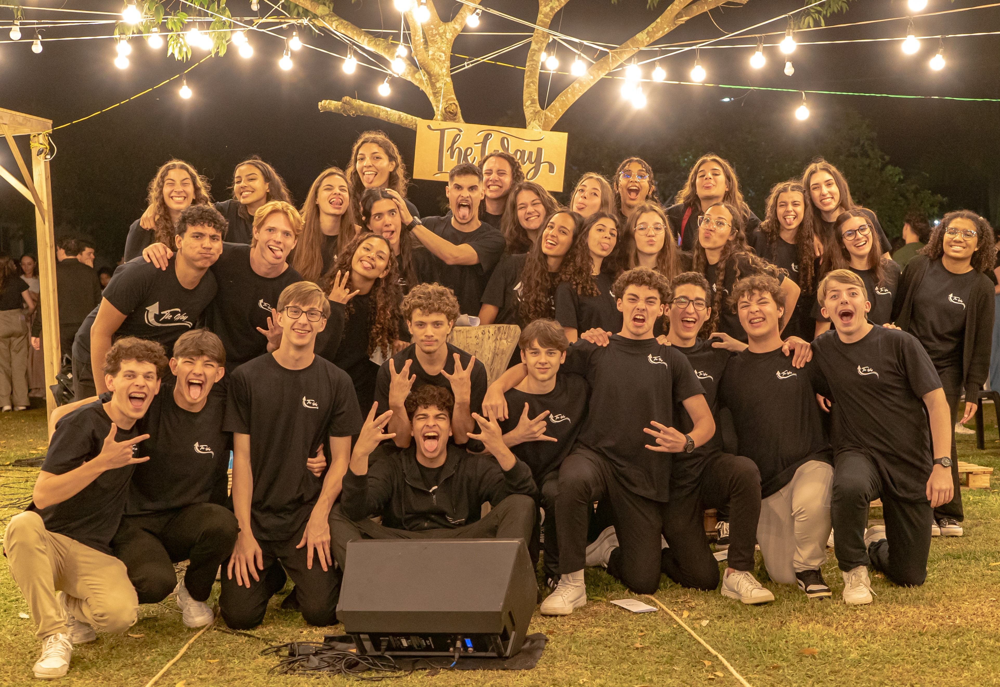
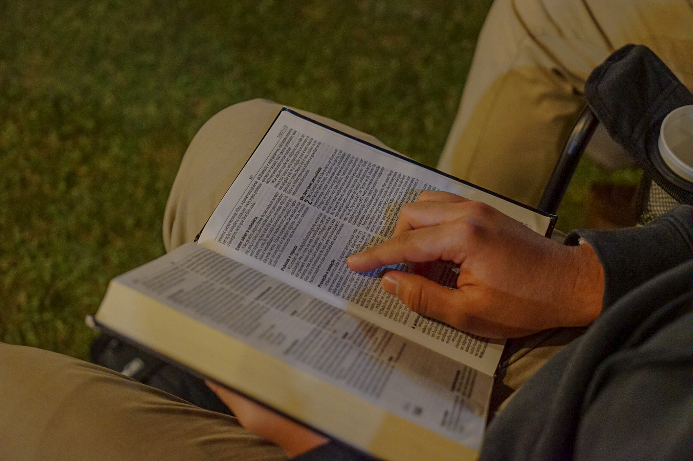

|
|
THE WAY |
| O que é o The Way? |
| Vamos começar pelo começo: |
| • Um encontro com Deus | • Um momento único, em meio a natureza (de verde tão intenso?) | |
| • Uma memória INCRÍVEL para todos | • Um culto fora da rotina | |
| • Um momento tão aguardado | • Significado de carinho em cada detalhe | |
| • Um respiro pra alma | • Algo que você não pode perder |
|  |
 |
| O que faz o The Way ser diferente? |
| Aqui nós temos: |
| • Louvores com amor - Para você realmente louvar, não só cantar | • Lembrancinhas - Para você se lembrar desse momento especial com Cristo | |
| • Culto ao ar livre - Para ajudar a sair da rotina | • Um cházinho ao chegar - Para você se sentir em casa |
|  |
 |
| A Equipe |
|
Não devemos vangloriar as pessoas, nós sabemos...
Maaaas, precisamos valorizar esses jovens valoros que tanto se dedicam
pra fazer a vontade de Deus! Eles se dedicam, se esforçam, e mesmo em meio
a problemas e confusões, essas pessoas sempre querem dar seu melhor! E a líder... Como não falar dela? Uma pessoa que mesmo em tanta aflição, desânimo, sempre busca fazer a vontade de Deus. Sempre dá seu melhor para ajudar os outros. A página não é sobre ela, mas como o criador desse site admira ela (: ❤️ |

|
 |
|
 |
| O que eu preciso levar para o The Way? |
| 1. O coração aberto pra Cristo |
| 2. Uma Bíblia |
| 3. Se puder, um amigo! :D |
| E não se preocupe em levar sua cadeira, o local estará todo preparado para te receber! |
|
 |
| Onde acontece o The Way? |
| O The Way acontece dentro do IAESC, na especial noite de sexta-feira. Venha nos visitar! |
| Espero você lá! |